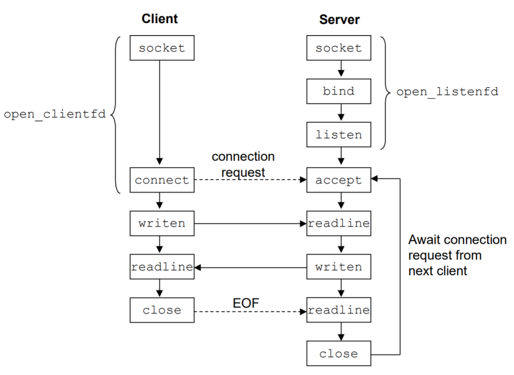

Introduction
This is a rewriting of Computer Systems: A Programmer's Perspective (known as CS:APP) in Rust. CS:APP focuses mainly on the C programming language. While C is useful for low-level programming and is highly portable, it is also unsafe and not very approachable. Rust, on the other hand, implements thoughtful safety and reliability features and provides a friendly, elegant set of tools that we believe would be helpful for students to learn.
Assumptions about the Reader's Background
We assume that you have programmed in some programming language before. We do not expect you to have any knowledge of the Rust programming language or computer systems. We will gradually introduce you to both.
Chapter 2: Representing and Manipulating Information
2.1 Information Storage
(starting p. 44, last 2 paragraphs)
...
A third case where byte ordering becomes visible is when programs are written that circumvent the normal type system. In rust, this can be done using generics to allow an object to be references according to a different data type from which it was created. Such coding tricks are strongly discouraged for most application programming, but they can be quite useful and even necessary for system-level programming.
Figure 2.4 shows rust code that uses casting to access and print the byte representations of different program objects. We use a generic type T that has the Serialize trait to read the bytes of a variable. The serialized value references a sequence of bytes where each byte is considered to be a non-negative integer. The first routine show_bytes is given the value that needs to be serialized. The rust formatting directive {:02x} indicates that an integer should be printed in hexadecimal with at least 2 digits.
use std::mem::size_of; fn show_bytes(val: *mut u8, length: isize) { for i in 0..length { print!(" {:02x}", unsafe { *(val.offset(i)) }); } print!("\n"); } fn show_int(x: i32) { show_bytes(&x as *const _ as *mut u8, size_of::<i32>() as isize); } fn show_float(x: f32){ show_bytes(&x as *const _ as *mut u8, size_of::<f32>() as isize); } fn show_pointer<T>(x: *const T){ show_bytes(&x as *const _ as *mut u8, size_of::<* const T>() as isize); } fn main() {}
Figure 2.4
Procedures show_int, show_float, and show_pointer demonstrate how to use procedure show_bytes to print the byte representations of rust program objects of type i32, f32, and *const T, respectively. Observe that they pass show_bytes a reference &x to the argument x, casting to a char pointer. The intermediate cast ("as _") asks the compiler to the work of figuring out what to cast the type to since you can't cast directly change the type a pointer points to in rust. Ultimately this cast lets the compiler know that the program should consider the pointer to be a sequence of bytes rather than to an object of the original data type. This pointer will then be to the lowest byte address occupied by the object.
The procedures use the rust size_of function to determine the number of bytes used by the object. In general, the expression size_of::<T>() returns the number of bytes required to store an object of type T. Using sizeof rather than a fixed value is one step toward writing code that is portable across different machine types.
...
use std::mem::size_of; fn show_bytes(val: *mut u8, length: isize) { for i in 0..length { print!(" {:02x}", unsafe { *(val.offset(i)) }); } print!("\n"); } fn show_int(x: i32) { show_bytes(&x as *const _ as *mut u8, size_of::<i32>() as isize); } fn show_float(x: f32){ show_bytes(&x as *const _ as *mut u8, size_of::<f32>() as isize); } fn show_pointer<T>(x: *const T){ show_bytes(&x as *const _ as *mut u8, size_of::<* const T>() as isize); } fn main() { test_show_bytes(100); } fn test_show_bytes(val: i32) { let ival: i32 = val; let fval: f32 = val as f32; let pval: *const i32 = &val as *const i32; show_int(ival); show_float(fval); show_pointer(pval); }
Figure 2.5
...
New to Rust? -- Formatting printing with print!
The print! function (along with its cousins
println!,eprint!, andeprintln!) provide a way to print information with considerable control over the formatting details. The first argument is a format string, while any remaining arguments are values to be printed. Within the format string, each character sequence enclosed in{...}indicates how to format the next argument. Typical examples include {} which stringifies a value if possible and {:?} which display the values in debugging mode if the type has the Debug trait implemented.
New to Rust? -- Pointer creation and dereferencing
At the lowest level, borrowed references in rust (
&) are equivalent to C pointers. So why would the type of x in show_pointer have to be*const Tinstead of just using&? This is because rust enforces memory safety at compile time. A result of the memory safety is that a spot in memory can only be owned by one variable at any given time, but it allows a function to borrow ownership of a variable by placing a&in before the variable name. But in order to interpret it as a pointer and not a reference to the variable, you have to cast it to a constant pointer*const Twhere T is a generic type. You can also cast it to a specific type of pointer if you know the type (that is, if you wanted a pointer to an int, it would be*const i32).
Aside Generating an ASCII Table
You can display a table showing the ASCII character code by executing the command
man ascii,
Practice 2.5
Consider the following three calls to show_bytes:
#![allow(overflowing_literals)] use std::mem::size_of; fn show_bytes(val: *mut u8, length: isize) { for i in 0..length { print!(" {:02x}", unsafe { *(val.offset(i)) }); } print!("\n"); } fn main() { let val: i32 = 0x87654321; let valp = &val as *const _ as *mut u8; show_bytes(valp, 1); /* 1. */ show_bytes(valp, 2); /* 2. */ show_bytes(valp, 3); /* 3. */ }
Indicate the values that will be printed by each call on a little-endian machine and on a big-endian machine:
- Little endian: __________ Big endian: __________
- Little endian: __________ Big endian: __________
- Little endian: __________ Big endian: __________
Practice 2.10
fn inplace_swap(x: *mut i32, y: *mut i32) { unsafe { *y = *x ^ *y; /* Step 1 */ *x = *x ^ *y; /* Step 2 */ *y = *x ^ *y; /* Step 3 */ } } fn main() {}
As the name implies, we claim that the effect of this procedure is to swap the values stored at the locations denoted by pointer variables x and y. Note that unlike the usual technique for swapping two values, we do not need a third location to temporarily store one value while we are moving the other. There is no performance advantage to this way of swapping; it is merely an intellectual amusement.
Starting with values a and b in the locations pointed to by x and y, respectively, fill in the table that follows, giving the values stored at the two locations after each step of the procedure. Use the properties of ^ to show that the desired effect is achieved. Recall that every element is its own additive inverse (that is, a ^ a = 0).
| Step | *x | *y |
|---|---|---|
| Initially | a | b |
| Step 1 | ________ | ________ |
| Step 2 | ________ | ________ |
| Step 3 | ________ | ________ |
New to Rust? Unsafe Rust A powerful feature of rust that separates it from other languages is that it enforces memory safety guarantees at compile time. However sometimes in systems programming you need to perform a task that isn't memory safe. That's where the
unsafekeyword comes in. Unsafe rust works exactly like normal rust without the guarantee of memory safety. In inplace_swap, we see it's used to dereference and mutate a mutable pointer.
Practice 2.11
Armed with the function inplace_swap from problem 2.10, you decide to write code that will reverse the elements of an array by swapping elements from opposite ends of the array, working toward the middle. You arrive at the following function:
fn inplace_swap(x: *mut i32, y: *mut i32) { unsafe { *y = *x ^ *y; /* Step 1 */ *x = *x ^ *y; /* Step 2 */ *y = *x ^ *y; /* Step 3 */ } } fn reverse_array(a: &mut Vec<i32>, cnt: usize) { let mut last = cnt-1; for first in 0..=cnt/2 { inplace_swap(&mut a[first], &mut a[last]); last -= 1 } } fn main() {}
When you apply the function to an array containing elements 1, 2, 3, and 4, you find the array now has, as expected, elements 4, 3, 2, and 1. When you try it on an array with elements 1, 2, 3, 4, and 5, however you are surprised to see that the array now has elements 5, 4, 0, 2, and 1. In fact, you discover that the code always works correctly on arrays of even length, but it sets the middle element to 0 whenever the array has odd length.
- For an array of odd length cnt = 2k + 1, what are the values of variables first and last in the final iteration of function reverse_array?
- Why does this call to function inplace_swap set the array element to 0?
- What simple modification to the code for reverse_array would eliminate this problem?
2.2 Integer Representations
Rust supports a variety of integral data types---ones that represent finite ranges of integers. These are shown in Figure 2.9, along with the ranges of values the can have for "typical" 64-bit programs. Each type can specify a size with a number telling how many bytes they type has as well as an indication of whether the represented numbers are all non-negative (declared as u), or possibly negative (i).
| Rust data type | Minimum | Maximum |
|---|---|---|
| i8 | -128 | 127 |
| u8 | 0 | 255 |
| i16 | -32,768 | 32,767 |
| u16 | 0 | 65,535 |
| i32 | -2,147,483,648 | 2,147,483,647 |
| u32 | 0 | 4,294,967,295 |
| i64 | -9,223,372,036,854,775,808 | 9,223,372,036,854,775,807 |
| u64 | 0 | 18,446,744,073,709,551,615 |
Figure 2.9 Typical ranges for Rust integral data types for 64-bit programs
2.2.5 Signed versus Unsigned in Rust
As indicated in Figure 2.9, Rust supports both signed and unsigned arithmetic for all of its integer data types. Generally, most numbers are signed by default. For example, when declaring a constant such as 12345 or 0x1A2B, the value is considered signed. Adding an '_u#' as a suffix creates an unsigned constant.; for example, 12345_u32 or 0x1A2B_u32.
Rust allows covertion between unsigned and signed. Although rust does not specify how this conversion should be made, most systems follow the rule that the underlying bit representation does not change. This rule has the effect of applying the function U2Tw when converting from unsigned to signed, and T2Uw when converting from signed to unsigned, where w is the number of its for the data type.
Conversions can only happen due to explicit casting, such as in the following code:
fn main() { let tx; let ty = 0x5678; let ux = 0x1234_u32; let uy: u32; tx = ux as i32; uy = ty as u32; println!("tx: 0x{:x}, uy: 0x{:x}", &tx, &uy); }
Other languages, such as C, allow you to implicitly cast from signed to unsigned simply by setting the value equal to a value with a different type.
2.2.6 Expanding the Bit Representation of a Number
One common operation is to convert between integers having different word sizes while retaining the same numeric value. Of course, this may not be possible when the destination data type is too small to represent the desired value. Converting from a smaller to a larger data type, however should always be possible.
...
As an example, consider the following code:
#![allow(overflowing_literals)] use std::mem::size_of; fn show_bytes(val: *mut u8, length: isize) { for i in 0..length { print!(" {:02x}", unsafe { *(val.offset(i)) }); } print!("\n"); } fn main() { let sx = -12345_i16; let usx = sx as u16; let x = sx as i32; let ux = usx as u32; print!("sx = {}:", &sx); show_bytes(&sx as *const _ as *mut u8, size_of::<i16>() as isize); print!("usx = {}:", &usx); show_bytes(&usx as *const _ as *mut u8, size_of::<u16>() as isize); print!("x = {}:", &x); show_bytes(&x as *const _ as *mut u8, size_of::<i32>() as isize); print!("ux = {}:", &ux); show_bytes(&ux as *const _ as *mut u8, size_of::<u32>() as isize); }
2.3 Integer Arithmetic(unchanged)
2.4 Floating Point (unchanged)
Chapter 5: Optimizing Program Performance
5.1 Capabilities and Limitations of Optimizing Compilers
...
Compilers must be carefult to apply only safe optimizations to a program, meaning that the resulting program will have the exacts same behavior as would an unoptimized version for all possible cases the program may encounter, up to the limits of the guarantees by the rust language. Constraining the compiler to perform only safe optimizations eliminates possible sources of undesired run-time behavior, but it also means that the programmer must make more of an effort to write programs in a way that the compiler can then transform into efficient machine-level code. To appreciate the challenges of deciding which program transformations are safe or not, consider the following two procedures:
fn twiddle1(xp: *mut i64, yp: *mut i64) { unsafe { *xp += *yp; *xp += *yp; } } fn twiddle2(xp: *mut i64, yp: *mut i64) { unsafe { *xp += 2* *yp; } } fn main() {}
At first glance, both procedures seem to have identical behavior. They both addd the value stored at the location designated by pointer yp to that designated by pointer xp. On the other hand, function witddle2 is more efficient. It requires only three memory references (read *xp, read *yp, write *xp), whereas twiddle1 requires six (two reads of *xp, two reads of *yp, and two writes of *xp). Hence, if the compiler is given procedure twiddle1 to compile, one might think it could generate more efficient code based on the computations performed by twiddle2.
Consider, however, the case in which xp and yp are equal. Then function twiddle1 will perform the following computations:
fn twiddle1(xp: *mut i64, yp: *mut i64) { unsafe { *xp += *yp; *xp += *yp; } } fn main() {}
The result will be that the value at xp will be increased by a factor of 4. On the other hand, function twiddle2 will perform the following computation.:
fn twiddle2(xp: *mut i64, yp: *mut i64) { unsafe { *xp += 2* *yp; } } fn main() {}
The result will be that hte value at xp will be increased by a factor of 3. The compiler knows nothing about how twiddle1 will be called, and so it must assume that the arguments of xxp and yp can ve equal. It therefor cannot generagte code in the styple of twiddle2 as an optimized version of twiddle1.
The case where two pointers may designate the same memory location is know as memory aliasing. In rust, memory aliasing is mostly considered unsafe since it allows multiple variables to own a place in memory. In performing only safe optimizations, the compiler must assume that different pointers may be aliased. As another example , for a program with pointer variables p and q, consider the following code sequence:
fn main() { let x = 1000; let y = 3000; let mut t1 = 0; let q: *mut i32 = &mut t1; let p: *mut i32 = &mut t1; unsafe{ *q = y; /* 3000 */ *p = x; /* 1000 */ t1 = *q; /* 1000 or 3000 */ }; }
The value computed for t1 depends on whether or not pointers p and q are aliased --- if not, it will equal 3,000, but if so it will equal 1,000. This leads to one of the major optimization blockers, aspects of programs that can severly limit the opportunities for a compiler to generate optimized code. If a compiler cannot determin wheter or not two pointers may be aliased, it must assume that either case is possible, limiting the set of possible optimizations.
Practice 5.1
The following problem illustrates the way memoyr aliasing can cause unexpectede program behavior. Consider the following procedure to swap two values:
fn swap(xp: *mut i64, yp: *mut i64) { unsafe { *xp = *xp + *yp; *yp = *xp - *yp; *xp = *xp - *yp; } } fn main() {}
If this procedure is called with xp equal to yp, wat effect will it have?
...
A second optimization blocker is due to function calls. As an example, consider the following two procedures:
fn f() -> i64{ todo!() } fn func1() -> i64 { f() + f() + f() + f() } fn func2() -> i64 { 4*f() } fn main() {}
It might seem at first that both compute the same result but with func2, calling f only once, whereas func1 calls it four times. It is tempting to generate code in the styple of func2 when given func1 as the source.
Consider, however, the following code for f:
static mut COUNTER: i32 = 0; fn main() { fn f() -> i64 { unsafe { let count = COUNTER.into(); COUNTER += 1; count.into() } } }
This function has a side effect --- it modifies some part of of the global program state. Changing the number of times it gets called changes the program behavior. In particular, a call to func1 would return 0 + 1 + 2 + 3 = 6, whereas the call to func2 would return 4 * 0 = 0, assuming both started with global variable counter set to zero.
Most compilers do not try to determine whether a function is free of side effects and hence is a candidate for optimizations such as those attempted in func2. Instead, the compiler assumes the worse case and leaves function calls intact.
5.2 Expressing Program Performance
...
fn main() {} fn psum1(a: Vec<f32>, p: &mut Vec<f32>, n: usize) { p[0] = a[0]; for i in 1..n { p[i] = p[i-1] + a[i]; } } fn psum2(a: Vec<f32>, p: &mut Vec<f32>, n: usize) { p[0] = a[0]; for i in (1..n-1).step_by(2) { let mid_val: f32 = p[i-1] + a[i]; p[i] = mid_val; p[i+1] = mid_val + a[i+1]; } if n % 2 == 0 { p[n-1] = p[n-2] + a[n-1]; } }
Figure 5.1
...
5.3 Program Example
To demonstrate how an abstract program can be systematically transformed into more efficient code, we will use a running example bacsed on the vector data structure shown in figure 5.3. A vector is represneted with two blocks of memory: the header and the data array. The header is a structure declared as follows:
The declaration uses longs (i64) as the default type of the elements.
Figure 5.4 shows some baic procedures for generating vecotrs, accesing vecot elements, determining the length of a vector, and a few other things. An important feature to not is that get_vec_element, the vecotr access function, performs bounds checking for every vector reference . This code is similar to the array representations used in many other languages, including Java. Bounds checking reduces the chances of program error, but it can also slow down program execution.
#![allow(unused)] fn main() { use std::alloc::{alloc, dealloc, Layout}; pub struct VecRec { pub len: i64, pub data: *mut i64, } impl VecRec { /// Create vector of specified length pub unsafe fn new(len: i64) -> Option<*mut VecRec> { let vec_layout = Layout::new::<VecRec>(); let result = alloc(vec_layout) as *mut VecRec; let mut data = &mut 0_i64 as *mut i64; (*result).len = len; /* Allocate array */ if len > 0 { if let Ok(layout) = Layout::from_size_align(8_usize*len as usize, 8) { data = alloc(layout) as *mut i64; } else { dealloc(result as *mut u8, vec_layout); return None } } (*result).data = data; Some(result.into()) } /// Retrieve vector element and store at dest. /// Return 0 (out of bounds) or 1 (successful) pub unsafe fn get_vec_element(&self, index: i64, dest: *mut i64) -> usize { if index < 0 || index >= self.len { return 0; } *dest = *(self.data.offset(index as isize)); 1 } /// Store val at vector element. /// Return 0 (out of bounds) or 1 (successful) pub unsafe fn set_vec_element(&self, index: i64, val: i64) -> usize { if index < 0 || index >= self.len { return 0; } *(self.data.offset(index as isize)) = val; 1 } /// Return length of vector pub unsafe fn vec_length(&self) -> i64 { self.len } /// Return the start of vector pub unsafe fn get_vec_start(&self) -> *mut i64 { self.data } } }
Figure 5.4
As an optimization example, consider the code shown in Figure 5.5, which combines all of the elements in a vector into a single value according to some operation.
In our presentation, we will proceed through a series of transformations of the code, writing different versions of the combining function.
...
#![allow(unused)] fn main() { pub unsafe fn combine1(v: *mut VecRec, dest: *mut i64) { *dest = 0; for i in 0..(*v).vec_length(){ let mut val: i64 = 0; (*v).get_vec_element(i, &mut val as *mut i64); *dest = *dest + val; } } }
Figure 5.5
5.4 Eliminating Loop Inefficiencies
Observe that procedure combine1, as shown in Figure 5.5, calls function vec_length as teh test condition of the for loop. Recall from our discussion of how to translate code containing loops into machine-level programs (Section 3.6.7) that the test condition must be evaluated on every iteration of the loop. On the other hand, the length of the vector does not change as teh loop proceeds. We could therefore compute the vector length only one an duse this value inour test condition.
Figure 5.6 shows a modified version called combine2. It calls vec_length at the beginning and assigns the result to a local variable length. This transformation has noticable effect on the overfall performance for some data types and operations, and minimal or even none for others. In any case, this transformations is required to eliminate inifficiencies that would become bottlenexks as we attempt further optimizations.
#![allow(unused)] fn main() { pub unsafe fn combine2(v: *mut VecRec, dest: *mut i64) { *dest = 0; let length = (*v).vec_length(); for i in 0..length { let mut val: i64 = 0; (*v).get_vec_element(i, &mut val as *mut i64); *dest = *dest + val; } } }
Figure 5.6
...
5.5 Reducing Procedure Calls
As we have seen, procedure calls can incur overhead and also block most forms of program optimization we can see in the code for combine2 (Figure 5.6) that get_vec_element is called on every loop iteration to retrieve the next vector element. This function checks the vector index i against the loop bounds with every vector reference, a clear source of inefficiency. Bounds checking might be a useful feature when dealing with arbitrary array accesses, but a simle analysis of the code for combine2 shows that all references will be valid.
#![allow(unused)] fn main() { pub unsafe fn combine3(v: *mut VecRec, dest: *mut i64) { *dest = 0; let length = (*v).vec_length(); let data = (*v).get_vec_start(); for i in 0..length { *dest = *dest + *data.offset(i as isize); } } }
Figure 5.9
Suppose instead that we use the fucntion get_vec_start (Figure 5.4) to our abstract data type. This function returns the starting address of the data array, as showin in Figure 5.9. We could then write the procedure shown as combine3 in this ficugrfe, having no function calls in the inner loop. Rather than making a function call to retrieve each vector element, it accessses the array directl. A purist might stay that this transformation seriously impairs the program modularity. In principle, the user of the vector abstract data type should not even need to know that the vector contents are stored as an array, rather than as some other data structure such as a linked list. A more pragmatic programmer would argue that this transformation is a necessary step towrad achieveing high-performance results.
...
5.6 Eliminating Unneeded Memory References
The code for combine3 accumulates the value being computed by the combining operation at the location designated by the pointer dest. This attribute can be seen by examining the assembly code generated by the inner loop of the combiled code
...
We can eliminate this needless reading and writing of memory by rewriting the code in the style of combine4 inf Figure 5.10. We introduce a temporary value acc that is sued in the loop to accumulate the computed values. The result is stored at dest only after the loop has been completed.
...
We see a signification improvement in the program performance, as will be seen in Section 5.10.
#![allow(unused)] fn main() { pub unsafe fn combine4(v: *mut VecRec, dest: *mut i64) { let length = (*v).vec_length(); let data = (*v).get_vec_start(); let mut acc = 0; for i in 0..length { acc = acc + *data.offset(i as isize); } *dest = acc; } }
Figure 5.10
...
5.7 Understanding Modern Processors (unchanged)
5.8 Loop Unrolling
Loop unrolling is a program transformation that reduced the number of iterations for a loop by increasing the number of elements computed on each iteration. We saw an example of this with the function psum2 (figure 5.1), where each iteration computes two elements of the prefix sum, thereby halving the total number of iterations required. Loop unrolling can improve performance in two ways. First, it reduces the numbr of operations that do not contribute directly to the program result, such as loop indexing and conditional branching. Second, it exposes ways in whiich we can further transform the code to reduce the number of operations in the critical paths of the overall computation. In this section, we will examine simple loop unrolling, without any further transformations.
Figure 5.16 shows a version of our combining code using what we will refer to as "2 x 1 loop unrolling." This frist loop steps through the array of two elements at a time. That is, the loop index i is incremented by 2 on each iteration, and the combining operation is applied to array elements i and i + 1 in a single iteration.
...
#![allow(unused)] fn main() { pub unsafe fn combine5(v: *mut VecRec, dest: *mut i64) { let length = (*v).vec_length(); let limit = length - 1; let data = (*v).get_vec_start(); let mut acc = 0; /* Combine 2 elements at a time */ let mut i = 0; while i < limit { acc = (acc + *data.offset(i as isize)) + *data.offset((i+1) as isize); i += 2; } /* Handle last element if need be */ for _ in i..length { acc = acc + *data.offset(limit as isize); } *dest = acc; } }
Figure 5.16
...
5.9 Enchancing Parallelism
...
5.9.1 Multiple Accumulators
...
Figure 5.21 shows code that uses this method. It uses both two-way loop unrolling, to combine more elements per iteration, and two-way parallelism, accumulating elements with even indices in verable acc0 and elements with odd indicies in veraible acc1. We therefore refer to this as "2 x 2 loop unroling." Ass before, we include a second loop to accumulate any remaining array elements for the case where teh vector length is not a multiple of 2. We then appply combinding code opeation to acc0 and acc1 to compute the final result.
#![allow(unused)] fn main() { pub unsafe fn combine6(v: *mut VecRec, dest: *mut i64) { let length = (*v).vec_length(); let limit = length - 1; let data = (*v).get_vec_start(); let mut acc0 = 0; let mut acc1 = 0; /* Combine 2 elements at a time */ let mut i = 0; while i < limit { acc0 = acc0 + *data.offset(i as isize); acc1 = acc1 + *data.offset((i+1) as isize); i += 2; } /* Handle last element if need be */ for _ in i..length { acc0 += *data.offset(limit as isize); } *dest = acc0 + acc1; } }
Figure 5.21
...
5.9.2
We now explore another way to break the sequential dependencies and thereby improve performance beyond the latency bound. We saw that the k x 1 loop unrolling of combine5 did not change the set of operations performed in combining the vector elements to form their sum or producet. By a very small change in the code, however, we can fundamentally change the way the combining is performed, and also greatly increase the performance.
Figure 5.26 shows a function combine7 that differs from the unrolled code of combine5 (Figure 5.16) only in the way the elements are combined in the inner loop. In combine5, the combining is performed by the statement
acc = (acc + *data.offset(i as isize)) + *data.offset((i+1) as isize);
while in combine7, it is performed by the statement
acc = acc + (*data.offset(i as isize) + *data.offset((i+1) as isize));
differing only in how two parentheses are placed. We call this a reassociation transformation, because the parenthesess shif the oder in which the vector elements are combined with the accumulated value acc, yielding a form of loop unrolling we refer to as "2 x 1a."
...
#![allow(unused)] fn main() { pub unsafe fn combine7(v: *mut VecRec, dest: *mut i64) { let length = (*v).vec_length(); let limit = length - 1; let data = (*v).get_vec_start(); let mut acc = 0; /* Combine 2 elements at a time */ let mut i = 0; while i < limit { acc = acc + (*data.offset(i as isize) + *data.offset((i+1) as isize)); i += 2; } /* Handle last element if need be */ if i == limit { acc += *data.offset(limit as isize); } *dest = acc; } }
Figure 5.26
5.10 Summary of Results for Optimizing Combining Code (unchanged)
...
Rust results summary
We'd expect the 7 combine functions to get faster and faster with the exception of combine7 which we expect to have similar performance to combine5. As we will see, however, this isn't exactly the case. We ran 2 sets of benchmarks on all 7 functions. The first set ran without taking advantage of rust's optimizaitions while the second ran with opt-level = 3. Here, we will take a look at all of these and discuss possibilities as to why some of the results are inconsistent with what we might expect.
Each benchmark creates a vector of size 10,000 where each element, i holds the value i * i. Then it calls one of the combine functions to determine the sum of the vector.
Unoptimized:
Here, two of the combine functions are not what would've been expected: combine4 and combine6. We'd expect combine4 to be faster than combine3, and we'd expect combine6 to be the fastest function. The three main culprits of these discrepencies are the difference in languages, machine architecture, and compilers.
These functions were originally written for optimizing C code, and rust being designed with a different purpose in mind, their compilation processes follow a different set of rules that allow for different binaries that GCC or another C compiler wouldn't give.
For combine6, there's a chance the loop unrolling couldn've slown down execution because of different compilers or different architecture. These were originally run on an Intel Core i7 Haswell processor when benchmarked in C. With rust, they were run on an AMD Ryzen 7 processor. Including the reseach done suggesting that loop unrolling in AMD processors perform worse than on Intel processors, the cache size to data size ratio may also have played a factor.
It is worth noting that rust does provide the attribute-like macro unroll_for_loops in the unroll crate to allow the rust compiler to handling the unrolling as it sees fit. Speedups when using this crate can match the optimized version of combine4.
combine1 time: [176.00 us
176.69 us 177.53 us]
combine2 time: [173.54 us175.12 us 176.90 us]
combine3 time: [158.76 us164.99 us 170.80 us]
combine4 time: [168.36 us173.15 us 178.22 us]
combine5 time: [24.625 us24.635 us 24.647 us]
combine6 time: [26.494 us26.502 us 26.511 us]
combine7 time: [25.117 us25.126 us 25.137 us]
Optimized:
Running the benchmarker with the optimizing function, the only odd function is combine4 which is orders of magnitude faster than all of the other functions. This has to do with how rust compiles this code. For whatever reason, the rust compiler deemed it a good idea to take advantage of XMM registers which are a kind of 128 bit register that can be used to perform simultaneous operations on 2 longs. Looking at the difference between combine3 and combine4, the change that most likely allowed this optimization to be able to take place is the lack of needing to dereference an accumulator before adding to it. Since accumulation is happening sequentially and within a local variable, rustc (the rust compiler), was smart enough to figure out that it could use these XMM registers.
combine1 time: [4.7249 us
4.7416 us 4.7762 us]
combine2 time: [4.7097 us4.7107 us 4.7119 us]
combine3 time: [2.4628 us2.4646 us 2.4670 us]
combine4 time: [663.91 ns664.95 ns 666.52 ns]
combine5 time: [2.3855 us2.3861 us 2.3867 us]
combine6 time: [1.6023 us1.6033 us 1.6047 us]
combine7 time: [2.3611 us2.3624 us 2.3642 us]
Chapter 8: Exceptional Control Flow
Exceptions
Exception Handling
Classes of Exceptions
Interrupts
Traps and System Calls
Faults
Aborts
Exceptions in Linux/x86-64 Systems
Linux/x86-64 Faults and Aborts
Linux/x86-64 System Calls
Linux provides hundreds of system calls that application programs use when they want to request services from the kernel, such as reading a file, writing a file, and creating a new process. Some of the popular Unix system calls are below:
| Number | Name | Description |
|---|---|---|
| 0 | read | Read file |
| 1 | write | Write file |
| 2 | open | Open file |
| 3 | close | Close file |
| 4 | stat | Get info about file |
| 9 | mmap | Map memory page to file |
| 12 | brk | Reset the top of the heap |
| 32 | dup2 | Copy file descriptor |
| 33 | pause | Suspend process until signal arrives |
| 37 | alarm | Schedule delivery of alarm signal |
| 39 | getpid | Get process ID |
| 57 | fork | Create process |
| 59 | execve | Execute a program |
| 60 | _exit | Terminate process |
| 61 | wait4 | Wait for a process to terminate |
| 62 | kill | Send signal to a process |
Notice that each system call has a unique integer number: this number corresponds to an offset in a jump table in the kernel so that the processor can quickly and easily jump to the code that carries out each system call. (This jump table is not the same as the exception table.)
Executing system calls in Rust is generally done via the standard library and crates. Rust's I/O APIs provide abstractions over top of system calls that give access to files, processes, networking, and more. Crates can fill in the gaps for system features that Rust does not (or does not yet) have API bindings for.
But how do crates crate new system calls if they, too, are written entirely in Rust? The answer lies in a particularly low-level (and dangerous!) macro: asm!.
System calls in Rust must be executed wholly in assembly. The Rust implementation for mixing assembly with Rust code remains unstable and generally inadvisable for production use. As an example of how this might look is as follows:
#![feature(asm)]
fn main() {
unsafe {
let uid = get_user_id();
println!("User ID: {}", uid);
}
}
unsafe fn get_user_id() -> u64 {
let answer: u64;
asm!(
"mov rax, 0x6b",
"syscall",
"mov {answer}, rax",
answer = out(reg) answer,
lateout("rax") _,
lateout("r11") _,
lateout("rcx") _
);
answer
}
Note that this code (at the time of writing) requires a nightly Rust compiler in order to compile. One can be obtained easily using the command rustup default nightly.
The system call in Linux for getting the user ID of the user executing the process is geteuid, with system call number 0x6b. To make this system call, we move 0x6b into %rax, execute the syscall instruction, and then allow the response from the kernel (placed in %rax) to be moved into our variable answer in Rust. Any more detail on this process in Rust is outside the scope of this book.
System calls are provided on x86-64 systems via a trapping instruction called syscall. It is quite interesting to study how programs can use this instruction to invoke Linux system calls directly. All arguments to Linux system calls are passed through general-purpose registers rather than the stack. By convention, register %rax contains the system call number, with up to six arguments in the %rdi, %rsi, %rdx, %r10, %r8, and %r9. The first argument is in %rdi, the second in %rsi, and so on. On return from the system call, registers %rcx and %r11 are destroyed, and %rax contains the return value. A negative return value between -4095 and -1 indicates an error corresponding to the negative errno.
Processes
Logical Control Flow
Concurrent Flows
Private Address Space
User and Kernel Modes
Context Switches
System Call Error Handling
Thankfully, since Rust handles our system calls internally and translates their results to the Rust Result type, there is no special error-handling required for system calls that might be required in other languages. When a function is called that internally requires a system call (for example, reading a file), Rust will handle the response from the kernel and transform it in to a Result type accordingly.
Process Control
Unix provides a number of system calls for manipulating processes. Many of these system calls have abstractions in Rust that permit them to be used in Rust programs. This section describes the most important ones and gives examples for their use.
Obtaining Process IDs
In Unix, each process has a non-zero 32-bit process ID (PID). The function in Rust that can get this value is std::process::id, which takes no arguments and returns a u32.
pub fn id() -> u32
Since processes can in turn spawn other processes, there is also a notion of a process having a parent within the kernel. All processes can trace their lineage back to the first process that the kernel spawned while the system was booting: init. Though Linux exposes a system call for finding the PID of the parent of the currently-running process, no such binding exists in Rust. Very similarly to how raw system calls were made in the Linux/x86-64 System Calls section, we can still find a way to make this system call using unsafe Rust:
#![feature(asm)]
fn main() {
unsafe {
let uid = get_parent_process_id();
println!("Parent Process ID: {}", uid);
}
}
unsafe fn get_parent_process_id() -> u64 {
let answer: u64;
asm!(
"mov rax, 0x6e",
"syscall",
"mov {answer}, rax",
answer = out(reg) answer,
lateout("rax") _,
lateout("r11") _,
lateout("rcx") _
);
answer
}
Creating and Terminating Processes
From a programmer's perspective, we can think of a process as being in one of three states:
Running. The process is either executing on the CPU or waiting to be executed and will eventually be scheduled by the kernel. Stopped. The execution of the process is suspended and will not be scheduled. A process stops as a result of receiving a
SIGSTOP,SIGTSTP,SIGTTIN, orSIGTTOUsignal, and it remains stopped until it receives aSIGCONTsignal, at which point it becomse running again. (A signal is a form of software interrupt that will be described in detail soon.) Terminated. The process is stopped permanently. A process becomes terminated for one of three reasons: (1) receiving a signal whose default action is to terminate the process, (2) returning from the main routine, or (3) calling thestd::process::exitfunction.
The third method of terminating a process relies on a function provided by the std::process module:
pub fn exit(code: i32) -> !
Recall that the ! return type indicates that a function does not return control to the calling function.
New processes can be spawned using the std::process::Command module. Assume that there exists some small binary file called spawn that exists in the working directory of a Rust program. This binary file prints "Hello world!" to standard output when it runs. The following code would work to execute that binary and print the output that it provides:
use std::process::Command;
fn main() {
println!("Spawning child process...");
let out = Command::new("./spawn").output().expect("Failed to spawn new process");
let out_string = String::from_utf8(out.stdout).unwrap_or_else(|_| {
String::from("Standard output from spawned process contained unsupported characters")
});
print!("{}", out_string);
}
Internally, Rust's spawning of this process makes heavy use of the system calls fork and execvp. fork exists to clone the current process. This new process is exactly the same in every way except that the process ID is different. Moreover, fork, by its nature, returns two times — once in the original process and once in the new child process. It returns with different values for each, though: the parent receives the child's PID and the child receives 0. In this way, subsequent code can use the returned value from fork to decide on different tasks to perform.
In the case of Rust spawning a new process, the child process that is spawned once fork has been called checks for the return value from fork. In the case that it is 0 and the running process is the child process, Rust then proceeds to execute another system call: execvp. This, as would be necessary to execute a file, is a request to the kernel to execute the binary code contained in the file passed to the system call.
One of the important notes about the fork system call is that it duplicates the memory space of the calling process for the child. This means that changes made in the child process will not be reflected in the parent, since their memory space is (at the instant of process cloning) identical, but not the same space in memory.
Reaping Child Processes
When a process terminates for any reason, the kernel does not remove it from the system immediately. Instead, the process is kept around in a terminated state until it is reaped by its parent. When the parent reaps the terminated child, the kernel passes the child's exit status to the parent and then discards teh terminated process, at which point it ceases to exist. A terminated process that has not yet been reaped is called a zombie.
When a parent process terminates, the kernel arranges for the init process to become the adopted parent of any orphaned children. If a parent process terminates without reaping its zombie children, then the kernel arranges for the init process to reap them. Long-running programs such as shells or servers, however, should always reap their zombie children. Even though zombies are not running, they still consume system memory resources.
A process waits for its children to terminate or stop by calling the waitpid function. In Rust, this system call is used internally when Command spawns a new process. waitpid provides ways for the calling process to examine many of its child processes at once, and encodes information in its return value about the exit codes from those processes so that the parent can take action based on whether the child process succeeded or failed.
Putting Processes to Sleep
Rust has a function called std::thread::sleep which enables the thread to request to be suspended for a certain amount of time.
pub fn sleep(dur: Duration)
It is guaranteed that the program will sleep for no less than the amount of time given, though slight variations in the operating system's scheduler will usually cause the program to sleep for a small amount longer than requested. Internally, this uses the nanosleep system call, causing the process to be unscheduled by the kernel unless a signal needs to be handled by the program. In this case, the nanosleep call may need to be made by Rust many times to ensure that the appropriate amount of time is slept through, since upon completing the handling of the signal, the program resumes execution. Luckily, Rust handles these intricacies internally.
Signals
...
Nonlocal Jumps
Tools for Manipulating Processes
Summary
Chapter 10: System Level I/O
What is I/O? Computer Systems: A Programmer's Perspective offers the following definition:
Input/output (I/O) is the process of copying data between main memory and external devices such as disk drives, terminals, and networks. An input operation copies data from an I/O device to main memory, and an output operation copies data from memory to a device.
In this chapter, we discuss how to perform system-level I/O using system-level functions provided by the kernel and higher-level functions provided by programming languages. Specifically, we examine the Unix I/O API and Rust's standard library and compare how to use them for input and output operations.
Rust programs can invoke Unix I/O system calls directly by using the syscall crate. However, it is usually unnecessary to use these syscalls because Rust provides wrapper functions for most of them. We refer to system calls and their corresponding wrapper functions interchangeably as system-level functions.
On Linux systems, we use the system-level Unix I/O functions provided by the kernel. Programming languages build on top of these functions to offer higher-level, abstracted facilities for performing I/O. While it is usually sufficient enough to use the higher-level I/O functions provided by programming languages, there are some cases where we may need to use the kernel's I/O functions directly.
This chapter introduces you to the general concepts of Unix I/O and standard I/O and teaches you how to perform I/O in your own programs. While this chapter serves as a general introduction to I/O, it also lays a solid foundation for other systems concepts. As Computer Systems: A Programmer's Perspective states:
I/O is integral to the operation of a system, and because of this, we often encounter circular dependencies between I/O and other systems ideas.
We do not discuss the Windows I/O model and the I/O functionalities provided by the Microsoft run-time library, but Rust provides a Windows-specific I/O crate, which you are free to explore on your own!
10.1 Unix I/O
Linux is in the class of Unix-like operating systems, which all behave similarly to the Unix operating system. For example, they all support certain features, such as multiple users, separation between kernel mode and user mode, and a hierarchical file system, which we discuss in 10.2. They also usually share one of the defining features of Unix: "Everything is a file". [1]
10.1.1 Everything is a file
On Linux systems, a file is represented as a sequence of m bytes:
All I/O devices (such as networks, disks, terminals, and even the kernel itself) are represented as files, so everything is essentially a file, which is really just a sequence of bytes. This straightforward mapping of I/O devices to files makes it easy for Linux to develop a simple, low-level API around it. Furthermore, since everything is represented with one main communication primitive (the file), the API can ensure that it performs in a uniform and consistern manner. We call this API Unix I/O.
10.1.2 Unix I/O Functions
The following list shows the standard ways in which Unix I/O's functions are performed:
- Opening files: When an application wants to access a file, it asks the kernel to
openthe file. In response, the kernel sends back a descriptor, which is a small nonnegative integer that identifies the file while it is open. The application keeps track of the descriptor, while the kernel keeps track of the the open file. - Changing the current file position: The kernel maintains a file position k for each open file, where k is the byte offset from the beginning of a file. You can think of the file position like a cursor. An application can change k by performing a
seekoperation. - Reading and writing files: When an application requests to
readfrom a file, the contents of the file are copied to memory. A read operation copies n bytes from the file, starting at the current file position k and then incrementing k by n. If a read operation is called where k is greater than the file's size, then an end-of-file (EOF) condition is triggered and detected by the calling application. Thewriteoperation works in a similar way, except instead of copying bytes from a file to memory, bytes are copied from memory to a file. - Closing files: Once an application is done accessing a file, it asks the kernel to
closethe file. The kernel consequently frees all the data structures that were created when opening the file and returns the file's descriptor to the pool of available descriptors.
10.2 Files
10.2.1 Linux File Types
The Linux system categorizes files into different types, where a file's type indicates its role in the system. Linux file types include:
- Regular files: These contain arbitrary data. There are two subtypes: text files and binary files. Text files are files that contain only ASCII or Unicode characters, and binary files are all other regular files. Applications usually distinguish between these two, but the kernel doesn't.
- Directories: These are files that maintain the mappings between filenames and files, which can be other directories. You can think of them as folders in your filesystem. They contain an array of links, where each link is the mapping between a filename and a file. Each directory contains at least two entries:
.(dot) - a link to the directory itself..(dot-dot) - a link to the parent directory in the directory hierarchy
- Sockets: These types of files are used in network programming to communicate with another process across a network.
There are other types of files specified by the Linux system, but those are beyond our scope for now.
10.2.2 The Linux Filesystem
The Linux filesystem is organized as a single directory hierarchy that is anchored by a root directory named / (slash). This structure is similar to that of a tree. Every file in the filesystem is a child of the root, either directly or indirectly.
Pathnames identify locations in the directory hierarchy. They are formatted strings that follow the pattern /filename1/filename2/.../filename3, where the first slash / is optional. There are two forms of pathnames:
- Absolute pathnames: These pathnames start with a slash, and they denote a path from the root node.
- Relative pathnames: These pathnames start with a filename, and they denote a path from the current working directory, not the root.
10.2.3 A Short Aside on Processes
We mentioned earlier that I/O is closely related to other systems ideas. One of these ideas is a process. Processes and I/O often work together, as I/O plays a central role in process creation and execution, while process creation plays a central role in how files are shared betwen processes.
A process is an instance of a program being executed. One component of a process is its context, which saves information about its current state. One piece of information that is included in a process's context is its current location, which is also known as its current working directory. You can change your shell's current working directory using the cd command.
10.2.4 How Files are Represented in Rust
In the upcoming sections, we will show you how to use Rust's standard library to perform I/O. Most of these I/O functions revolve around the File struct in Rust's standard library. However, I/O functions can also be performed on other types, such as TcpStream and Vec<T>.
The File struct represents a reference to an open file on the filesystem.
pub struct File {
inner: fs_imp::File,
}
File contains one member: inner, which is of the type fs_imp::File, where fs_imp is an identifier for the [sys::fs] crate. The sys::fs crate is part of the internal docs and is not part of Rust's public API. However, we will provide a brief overview of its File struct so that you can have a general idea of what's going on under the hood. Furthermore, since we're focusing on Unix in this textbook, we specifically want to look at std::sys::unix::fs::File.
pub struct File(FileDesc);
FileDesc comes from the std::sys::unix::fd module and is a c_int, which is defined in libc::c_int as an i32. The std::sys::unix::fd is a nightly-only experimental API, so you will need to have nightly installed in order to directly run code from the std::sys::unix crate.
In short, File is a generic type that contains one member, inner, which implements the system-specific file representation for the appropriate platform. On Unix systems, inner is a std::sys::unix::fs::File type, where the file contians a file descriptor, FileDesc.
10.3 Opening and Closing Files
In this section, we discuss how to open and close files using Rust's standard library. The Rust standard library contains the std::io and std::fs modules for performing I/O and manipulating the filesystem, respectively.
10.3.1 Open
The File struct has an open method implemented for it:
pub fn open<P: AsRef<Path>>(path: P) -> io::Result<File> {
OpenOptions::new().read(true).open(path.as_ref())
}
New to Rust?
Pathis a struct from thestd::pathmodule that represents a slice of a path. It is similar to thestrtype.Pathis really just a wrapper aroundOsStr, which is why they work directly on string according to the local platform's (in this case Unix) path syntax. This is an unsized type, which means that it must always be used behind a pointer like&orBox.AsRefis used to perform cheap reference-to-reference conversions. Thus, the<P: AsRef<Path>>code specifies that the path argument must implement this trait. A path implements this trait if it can be converted to reference toPath.
Traits define shared behavior among different types. The Rust compiler interprets traits as some functionality a particular type has and can share with other types. A type has the behavior specified by a trait if that trait is implemented for the type. This basically means that we can call the functions defined for a trait on all types that have, or implement, that trait.
The File::open function takes a path argument and returns an io::Result<File>, where std::io::Result is the specialized Result type for I/O operations. If File::open is successful, Ok(File) is returned. Otherwise, io::Error is returned.
type Result<T> = Result<T, Error>;
Why does
std::iouse an alias ofstd::result::Result? When aResulttype is used, it is generally assumed to be thestd::result::Resulttype. However, the I/O crate has specified an alias forResultthat is used for I/O operations. This was done in order to avoid writing outio::Errordirectly.
New to Rust? The
Resulttype is an enum with two variants:Ok(T)andErr(E). TheOk(T)variant indicates that the operation was successful and returned a value of typeT, while theErr(E)variant indicates that the operation was not successful and returned an error value of typeE.
enum Result<T, E> {
Ok(T),
Err(E),
}
Now, let's put this all together and go through an example. Assume we have a file we want to open, open_me.txt that is in the same directory as main.rs.
use std::fs::File; fn main() { let result = File::open("open_me.txt"); println!("The result of the open operation was: {:?}", result); }
Note that if you hit the play button to run the code, you will see a "No such file or directory" error. This happens because the textbook's browser has no idea where to find the file. Running the program in your local directory returns:
cargo run
Compiling chapter_10_code v0.1.0 (../chapter_10_code)
Finished dev [unoptimized + debuginfo] target(s) in 0.48s
Running `../chapter_10_code/target/debug/chapter_10_code`
The result of the open operation was: Ok(File { fd: 3, path: "/../chapter_10_code/src/open_me.txt", read: true, write: false })
We can see that we were able to successfully open open_me.txt. The File's file descriptor, path, and read and write permissions are returned.
10.3.2 OpenOptions
You may have noticed an OpenOptions struct being initialized in the function body of File::open. This struct encapsulates the options and files that can be used to configure how a file is opened. It also has an open method implemented for it. In fact, if you look back at the File::open code, you can see that File::open opens a file using OpenOptions::open. This is because File::open is actually an alias for OpenOptions::open.
pub fn open<P: AsRef<Path>>(&self, path: P) -> io::Result<File> {
self._open(path.as_ref())
}
OpenOptions has the same function definition as File::open, and the two can be used interchangeable. However, it is useful to use OpenOptions when you want to specify permissions or flags options for the file. This can be done with the OpenOptions::new method, which creates a blank new set of file options ready for configuration. All options are initially set to false. The permissons and flags options you can set include:
- read - Read permissions. If
true, then the file should be read-able. - write - Write permissions. If
true, then the file should be write-able. - append - Open the file in append mode. Before each
writeoperation, position the file offset at the end of the file, as if withseek. This prevents overwriting previous content. - truncate - If the file exists, then truncate it to length 0. The file must be opened with write access.
- create - Create a new file or open it if already exists.
- create_new - Creates a new file or fails if it already exists.
- custom_flags - Sets custom flags bits. (System-specific)
- mode - Sets the mode bits that a new file will be created with. The operating system masks out bits with the system's
umaskto produce the file's final permissons. Each process includes aumaskin its context that is set by calling theumaskfunction. When a process calls theOpenOptions::openfunction with somemodeargument and creates a new file, the access permission bits of the new file are set tomode & ~umask. If nomodeis set, then the default value0o666is used. (System-specific)
Just like the std::fs::File struct, std::fs::OpenOptions derives itself from std::sys::unix::fs::OpenOptions:
pub struct OpenOptions {
read: bool,
write: bool,
append: bool,
truncate: bool,
create: bool,
create_new: bool,
custom_flags: i32,
mode: mode_t,
}
The custom_flags and mode fields are derived from the libc crate. The symbolic names and permissions for these bits are shown in the table below:
| Mask | Permissions |
|---|---|
| S_IRUSR | User (owner) can read the file |
| S_IWUSR | User (owner) can write the file |
| S_IXUSR | User (owner) can execute the file |
| S_IRGRP | Members of the owner's group can read the file |
| S_IWGRP | Members of the owner's group can write the file |
| S_IXGRP | Members of the owner's group can execute the file |
| S_IROTH | Others (anyone) can read the file |
| S_IWOTH | Others (anyone) can write the file |
| S_IXOTH | Others (anyone) can execute the file |
Now, let's try the example from 10.3.1 with OpenOptions::open instead of File::open. This code is in the chapter_10_code/src/section_3/open_options.rs file.
use std::fs::OpenOptions;
fn main() {
let result = OpenOptions::new().read(true).open("open_me.txt");
println!("The result of the open operation was: {:?}", result);
}
Running the program yields the following result:
cargo run
Compiling chapter_10_code v0.1.0 (../chapter_10_code)
Finished dev [unoptimized + debuginfo] target(s) in 0.69s
Running `../chapter_10_code/target/debug/chapter_10_code`
The result of the open operation was: Ok(File { fd: 3, path: "../chapter_10_code/src/open_me.txt", read: true, write: false })
Great! We can see that both File::open and OpenOptions::open returned the same result. Now, let's consider an example where you want to open a file with both read and write permissions set.
use std::fs::OpenOptions;
fn main() {
let result = OpenOptions::new().read(true).write(true).open("open_me.txt");
println!("The result of the open operation was: {:?}", result);
}
cargo run
Compiling chapter_10_code v0.1.0 (../chapter_10_code)
Finished dev [unoptimized + debuginfo] target(s) in 0.66s
Running `../chapter_10_code/target/debug/chapter_10_code`
The result of the open operation was: Ok(File { fd: 3, path: "../chapter_10_code/src/open_me.txt", read: true, write: true })
We can see that both read and write are set to true, so it worked! Here are a couple exercises for you to try: (You can assume that the file, file.txt is in the same directory as main.rs.)
- How would you open a file with
createset? - How would you open a file with
truncateset? - How would you open a file in a mode where anyone can read the file?
The solutions to these exercises are below. Click the arrow button to unhide them!
Exercise Solutions
// You will need to add `libc = "0.2"` to `[dependencies]` in your Cargo.toml file.
extern crate libc;
use std::fs::OpenOptions;
use std::os::unix::fs::OpenOptionsExt;
fn main() {
// Opens the file with `create` set
let _create_file = OpenOptions::new().read(true).write(true).create(true).open("file.txt");
// Opens the file with `truncate` set
let _trunc_file = OpenOptions::new().write(true).truncate(true).open("file.txt");
// Opens the file such that anyone can read it
let mut options = OpenOptions::new();
options.write(true);
if cfg!(unix) {
options.mode(libc::S_IROTH.into());
}
let _mode_file = options.open("file.txt");
}
10.3.3 Close
Files are automatically closed once they go out of scope.
fn main() {
let file = File::open("file.txt"); // file is now in scope
// do things with the file
} // file goes out of scope and is automatically closed
Errors that are detected upon closing are ignored because FileDesc implements the Drop trait, which acts as a destructor on a value once it is no longer needed. In order to handle errors, you must use the method sync_all. Sync_all attempts to sync all OS-internal metadata to the filesystem. Dropping a file will ignore errors in synchronizing the in-memory data. Here is an example of how you might use sync_all:
use std::fs::File;
use std::io::prelude::*;
fn main() -> std::io::Result<()> {
let mut file = File::create("file.txt")?;
file.write_all(b"Hello, world!")?;
// do some stuff with the file
file.sync_all()?;
Ok(())
}
New to Rust? The
()type is known as the unit type in Rust. The unit type has one value,(), and it is used when there is no other meaningful value that can be returned. Functions that do not explictly declare a return type automatically return the unit type. Therefore, the following two function definitions have equivalent return types:fn func1() -> () {} fn func2() {}
10.4 Reading and Writing Files
In this section, we discuss the Read and Write traits, which provide a general interface for reading and writing input and output.
10.4.1 Read
The Read trait reads bytes from a source. A type that implements this trait is called a reader. Types such as Files, TcpStreams, and Vec<T>s are readers. The Read trait defines multiple read functionalities, with a core read method that attempts to pull bytes from a source into a provided buffer. The other read methods build off of this one read method and include read_to_end, read_to_string, read_exact, and read_vectored. Readers are only required to implement the read method, which gives them the ability to use the other read methods.
Before we get into the different ways we can read files, let's take a closer look at the read method that readers are required to implement.
fn read(&mut self, buf: &mut [u8]) -> Result<usize>
The read method copies (at most) n bytes from the current file position of the file identified by descriptor fd to memory location buf. If read is successful, then Ok(usize) is returned, where usize is the number of bytes read. If the number of bytes returned is 0, then either the reader has reached the end of the file or the buffer was initialized with length 0. If read is unsuccessful, then it returns an Err value.
In some situations, read and write copy less bytes than requested by the application. These are known as short counts, and they do not result in an error. They may occur for the following reasons:
- Encountering EOF on reads: Sometimes we want to read from a file that has less than n bytes from the current file position to the EOF, which causes a short count. For instance, suppose we want to read from a file that contains 20 more bytes from the current file position and that we want to read the file in 50-byte chunks. In this case, the next
readwill return a short count of 20, and thereadafter that will signal that it has reached the end of the file by returning a short count of 0. - Reading text lines from a terminal: If an open file is associated with a terminal (i.e. a keyboard and display), then the number of bytes that can be read from the file is restricted by a text line in the terminal. Each
readfunction copies one text line at a time, returning a short count equal to the number of bytes of the text line. - Reading and writing network sockets: If an open file is associated with a network socket (which we discuss more in Chapter 11), then internal buffering constraints and long network delays can cause
readandwriteto return short counts. Short counts can also occur whenreadandwriteare called on a Linux pipe, which is an interprocess communication mechanism. Pipes are beyond our scope, but they basically let you use multiple commands such that the ouptut of one is passed as input to the next. - Read was interruped by a signal.
Other than these cases, you will typically not encounter short counts, especially if you are reading from a disk file (except when you reach the end of the file).
Let's try an example where we read from a file, read_me.txt that is located in the same directory as main.rs.
use std::io;
use std::io::prelude::*;
use std::fs::File;
fn main() -> io::Result<()> {
let mut f = File::open("read_me.txt")?;
let mut buffer = [0; 25];
// read at most 25 bytes from the file
let num_bytes = f.read(&mut buffer)?;
println!("Read {} bytes from the file.", num_bytes);
Ok(())
}
Running the program in your local directory returns:
cargo run
Compiling section_4_code v0.1.0 (../chapter_10_code/src/section_4_code)
Finished dev [unoptimized + debuginfo] target(s) in 0.73s
Running `../section_4_code/target/debug/section_4_code`
Read 13 bytes from the file.
We can also read the contents of a file into a string. Let's write some text inside read_me.txt:
hello, world!
Now, let's try reading what we just wrote in the file:
use std::io;
use std::io::prelude::*;
use std::fs::File;
fn main() -> io::Result<()> {
let mut f = File::open("read_me.txt")?;
let mut string_buffer = String::new();
f.read_to_string(&mut string_buffer)?;
println!("The file says: {}", string_buffer);
Ok(())
}
cargo run
Compiling section_4_code v0.1.0 (../chapter_10_code/src/section_4_code)
Finished dev [unoptimized + debuginfo] target(s) in 1.33s
Running `../chapter_10_code/src/section_4_code/target/debug/section_4_code`
The file says: hello, world!
New to Rust? The
?operator allows for easier error handling. You can apply?to functions that return aResultvalue. If the function return theOkvariant, then?unwraps it and returns the inner value. Otherwise, if it was theErrvariant, then?returns from the function you are currently in. Using?in place ofmatchstatements or other forms of handlingResultvalues is much more straightforward and visually clean.
Here are some exercises for you to try:
- Open a file with the
readoption set to false. Then try reading from it. What happens? - Read the contents of
read_me.txtinto a vector. Then print the vector. (Hint: To ensure that all contents in the file are copied to the vector, useread_to_end).
The solutions to these exercises are below. Click the arrow button to unhide them!
Exercise Solutions
use std::io;
use std::io::prelude::*;
use std::fs::OpenOptions;
fn main() -> io::Result<()> {
let mut unreadable_file = OpenOptions::new().read(false).create(true).open("file.txt")?;
let mut string_buffer = String::new();
// This returns: Error: Os { code: 22, kind: InvalidInput, message: "Invalid argument" }
unreadable_file.read_to_string(&mut string_buffer)?;
let mut f = OpenOptions::new().read(true).open("read_me.txt")?;
let mut vec_buffer = Vec::new();
f.read_to_end(&mut vec_buffer)?;
// This returns: The file says: [104, 101, 108, 108, 111, 44, 32, 119, 111, 114, 108, 100, 33]
println!("The file says: {:?}", vec_buffer);
Ok(())
}
10.4.2 Write
The Write trait writes data into an object, which is a byte-oriented sink. Types that implement the Write trait are also known as writers. Writers are required to implement two methods: write and flush:
write- Writes data into an object and returns the number of bytes that were written.flush- Ensures that all buffered data has been pushed out to the "true sink".
Other methods of the Write trait include write_all, write_vectored, write_all_vectored, and write_fmt. File implements write, write_vectored, and flush. However, we can still use the other write methods because they build off the core two methods write and flush.
fn write(&mut self, buf: &[u8]) -> Result<usize>
The write method writes at most n bytes from a buffer into the writer and returns Ok(usize) if the operation is successful, where usize is the number of bytes written, or an Err value if the operation was unsuccessful. If the number of bytes returned is 0, then either the underlying object is no longer able to accept any more bytes or the provided buffer is empty. Just like read, short counts are not considered errors for write. Furthermore, if the write function is interrupted, an ErrorKind::Interrupted error is raised but is non-fatal, so the write operation can be tried again if there is nothing else to do.
fn flush(&mut self) -> Result<()>
The flush method flushes the output stream, ensuring that all buffered contents reach their destination. If a short count is encountered, then this does produce an error, unlike read and write, even if the short count occurs because it has reached the end of the file.
The example below shows how to write to a file. We can check if the operation worked by reading the file.
use std::io::prelude::*;
use std::fs::File;
fn main() -> std::io::Result<()> {
let mut buffer = File::create("write.txt")?;
buffer.write(b"hello file!")?;
let mut file_contents = String::new();
let mut f = File::open("write.txt")?;
f.read_to_string(&mut file_contents)?;
println!("The file says: {}", file_contents);
Ok(())
}
Running the program outputs:
cargo run
Compiling section_4_code v0.1.0 (/Users/stephaniediao/Desktop/rust/chapter_10_code/src/section_4_code)
Finished dev [unoptimized + debuginfo] target(s) in 0.80s
Running `/Users/stephaniediao/Desktop/rust/chapter_10_code/src/section_4_code/target/debug/section_4_code`
The file says: hello file!
Great! We know it works because we were able to read what we wrote to the file. Now, let's try an example with flush.
use std::io::prelude::*;
use std::fs::File;
fn main() -> std::io::Result<()> {
let mut buffer = File::create("flush.txt")?;
buffer.write_all(b"All these bytes should be written!")?;
buffer.flush()?;
let mut file_contents = String::new();
let mut f = File::open("flush.txt")?;
f.read_to_string(&mut file_contents)?;
println!("The file says: {}", file_contents);
Ok(())
}
cargo run
Compiling section_4_code v0.1.0 (/Users/stephaniediao/Desktop/rust/chapter_10_code/src/section_4_code)
Finished dev [unoptimized + debuginfo] target(s) in 1.05s
Running `/Users/stephaniediao/Desktop/rust/chapter_10_code/src/section_4_code/target/debug/section_4_code`
The file says: All these bytes should be written!
10.4.3 BufReader and BufWriter
BufReader and BufWriter are two structs included in std::io that allow for more efficient reads and writes. The Rust documentation provides the following reason for why BufReader is particularly helpful:
It can be excessively inefficient to work directly with a
Readinstance. For example, every call to read onTcpStreamresults in a system call. ABufReader<R>performs large, infrequent reads on the underlyingReadand maintains an in-memory buffer of the results.BufReader<R>can improve the speed of programs that make small and repeated read calls to the same file or network socket. It does not help when reading very large amounts at once, or reading just one or a few times. It also provides no advantage when reading from a source that is already in memory, like aVec<u8>.
BufReader also provides additional ways of reading files, such as read_until, read_line, split, and lines.
BufWriter is also much more efficient than Write. The Rust documentation provides the following reason for why BufWriter is helpful:
It can be excessively inefficient to work directly with something that implements
Write. For example, every call to write onTcpStreamresults in a system call. ABufWriter<W>keeps an in-memory buffer of data and writes it to an underlying writer in large, infrequent batches.BufWriter<W>can improve the speed of programs that make small and repeated write calls to the same file or network socket. It does not help when writing very large amounts at once, or writing just one or a few times. It also provides no advantage when writing to a destination that is in memory, like aVec<u8>. It is critical to callflushbeforeBufWriter<W>is dropped. Though dropping will attempt to flush the contents of the buffer, any errors that happen in the process of dropping will be ignored. Callingflushensures that the buffer is empty and thus dropping will not even attempt file operations.
Let's go through an example for how to read and write from a file using BufReader and BufWriter. Specifically, we will try to copy text from one file to another, line by line. First, let's create a file poem.txt that contains the poem When I Am Gone by Shel Silverstein:
When I am gone what will you do?
Who will write and draw for you?
Someone smarter—someone new?
Someone better—maybe YOU!
Let's start by just reading the file, line by line.
use std::io::prelude::*;
use std::io::{BufReader};
use std::fs::File;
fn main() -> std::io::Result<()> {
let f = File::open("poem.txt")?;
let bufreader = BufReader::new(f);
for line in bufreader.lines() {
println!("{:?}", line);
}
Ok(())
}
cargo run
Compiling section_4_code v0.1.0 (/Users/stephaniediao/Desktop/rust/chapter_10_code/src/section_4_code)
Finished dev [unoptimized + debuginfo] target(s) in 1.19s
Running `/Users/stephaniediao/Desktop/rust/chapter_10_code/src/section_4_code/target/debug/section_4_code`
Ok("When I am gone what will you do?")
Ok("Who will write and draw for you?")
Ok("Someone smarter—someone new?")
Ok("Someone better—maybe YOU!")
It works! So now let's try using BufWriter to write each line to another file, poem_copy.txt.
use std::io::prelude::*;
use std::io::{BufReader, BufWriter};
use std::fs::File;
fn main() -> std::io::Result<()> {
let f1 = File::open("poem.txt")?;
let f2 = File::create("poem_copy.txt")?;
let bufreader = BufReader::new(f1);
let mut bufwriter = BufWriter::new(f2);
for line in bufreader.lines() {
bufwriter.write(&line.unwrap().as_bytes())?;
bufwriter.write(b"\n")?;
}
Ok(())
}
After running the program, poem_copy.txt looks like this:
When I am gone what will you do?
Who will write and draw for you?
Someone smarter—someone new?
Someone better—maybe YOU!
This means our program works correctly and has copied the contents of poem.txt to poem2.txt, line by line. Now, it's your turn! Try out the following exercises:
- Given the text file below, read the contents of the file until you have reached the first ',' delimeter. Double check that your program has stopped at the first ','. How many bytes were read?
- Then, split the text file on each whitespace.
exercise.txt:
It was the best of times, it was the worst of times, it was the age of wisdom, it was the age of foolishness, it was the epoch of belief, it was the epoch of incredulity, it was the season of Light, it was the season of Darkness, it was the spring of hope, it was the winter of despair, we had everything before us, we had nothing before us, we were all going direct to Heaven, we were all going direct the other way—in short, the period was so far like the present period, that some of its noisiest authorities insisted on its being received, for good or for evil, in the superlative degree of comparison only.
The solutions to these exercises are below. Click the arrow button to unhide them!
Exercise Solutions
use std::io::prelude::*;
use std::io::{BufReader};
use std::fs::File;
fn main() -> std::io::Result<()> {
let f = File::open("exercise.txt")?;
let mut bufreader = BufReader::new(f);
let mut buffer = Vec::new();
// Read from the file until we hit the first , delimeter
let num_bytes = bufreader.read_until(b',', &mut buffer)?;
// This outputs: "Number of bytes read: 25"
println!("Number of bytes read: {}", num_bytes);
// This outputs: "Text read: It was the best of times,"
println!("Text read: {}", String::from_utf8(buffer).unwrap_or("Something went wrong.".to_string()));
let split_iter = bufreader.split(b' ');
for split in split_iter {
// This outputs each word in the file
println!("{:?}", String::from_utf8(split.unwrap()).unwrap_or("Something went wrong.".to_string()));
}
Ok(())
}
10.6 Reading File Metadata
In this section we discuss how to retrieve information about a file, also known as a file's metadata, using the metadata function.
10.6.1 The Metadata Struct
The Metadata struct stores known information about a file, such as its permissions, size, and modification times. It is derived from the std::sys::unix::fs::FileAttr struct, which contains two fields:
pub struct FileAttr {
stat: stat64,
statx_extra_fields: Option<StatxExtraFields>,
}
statx_extra_fields is beyond the scope of this textbook. stat64 is a struct defined in the libc crate and contains the following members:
pub struct stat64 {
pub st_dev: dev_t,
pub st_ino: ino64_t,
pub st_nlink: nlink_t,
pub st_mode: mode_t,
pub st_uid: uid_t,
pub st_gid: gid_t,
pub st_rdev: dev_t,
pub st_size: off_t,
pub st_blksize: blksize_t,
pub st_blocks: blkcnt64_t,
pub st_atime: time_t,
pub st_atime_nsec: i64,
pub st_mtime: time_t,
pub st_mtime_nsec: i64,
pub st_ctime: time_t,
pub st_ctime_nsec: i64,
// some fields omitted
}
Most of the stat64 struct members are beyond the scope of this textbook, except for st_size and st_mode. The st_size member contains the file size, in bytes, and the st_mode member contains the file permission bits and the file type, which we discussed in 10.3.1 and 10.2.1, respectively. Table 10.1 in section 10.3.1 shows the file permission bits. We can derive the file type from st_mode using the following constants from libc:
pub const S_IFDIR: ::mode_t = 16384;
pub const S_IFREG: ::mode_t = 32768;
pub const S_IFLNK: ::mode_t = 40960;
pub const S_IFSOCK: ::mode_t = 49152;
These two members are used in Web servers and are discussed more in depth in Chapter 11.
10.6.2 The Metadata Function
The std::fs::metadata function is defined as follows:
pub fn metadata<P: AsRef<Path>>(path: P) -> io::Result<Metadata> {
fs_imp::stat(path.as_ref()).map(Metadata)
}
It calls the std::sys::unix::fs::stat function:
pub fn stat(p: &Path) -> Result<FileAttr>
In short, the metadata function takes an argument that can be converted to a reference to a path and returns an io::Result type. If the operation is successful, then Ok(Metadata) is returned. Otherwise, it returns an Err value. Two common reasons why metadata may fail include:
- The user lacks permissions to perform
metadataon path. - The path does not exist.
The following example shows how to view a file's metadata.
use std::fs::metadata;
use std::fs::OpenOptions;
fn main() -> std::io::Result<()> {
let file = OpenOptions::new().create(true).read(true).write(true).open("file.txt")?;
let file_metadata = metadata("file.txt")?;
// This returns: "File type: FileType(FileType { mode: 33188 })""
println!("File type: {:?}", file_metadata.file_type());
// This returns: "File permissions: Permissions(FilePermissions { mode: 33188 })"
println!("File permissions: {:?}", file_metadata.permissions());
/* This returns: "All metadata: Metadata { file_type: FileType(FileType { mode: 33188 }),
is_dir: false, is_file: true,
permissions: Permissions(FilePermissions { mode: 33188 }),
modified: Ok(SystemTime { tv_sec: 1622516353, tv_nsec: 687718590 }),
accessed: Ok(SystemTime { tv_sec: 1622516355, tv_nsec: 343733264 }),
created: Ok(SystemTime { tv_sec: 1622516350, tv_nsec: 404487658 }) } */
println!("All metadata: {:?}", file_metadata);
Ok(())
}
10.7 Reading Directory Contents
In this section, we examine how to read directory contents with the read_dir function. Reading directory contents is very similar to reading regular files.
10.7.1 The Read_Dir Function
The read_dir function is defined as follows:
pub fn read_dir<P: AsRef<Path>>(path: P) -> Result<ReadDir>
If the operation is successful, then Ok(ReadDir) is returned. Otherwise, an Err value is returned. Errors can occur for many reasons, but these are some common ones:
- The provided path doesn’t exist.
- The process lacks the adequate permissions to view the contents.
- The path points refers to a non-directory file.
10.7.2 The ReadDir Struct
ReadDir is an iterator over the entries in a directory.
New to Rust? An Iterator is a type that implements the
Iteratortrait. You can use iterators to easily iterate over collections, such as arrays, vectors, and hashmaps.
The following example shows how to use the read_dir function and the ReadDir struct to iterate over the entries in a directory, example_directory. Assume that example_directory includes three files: file1.txt, file2,txt, and file3.txt.
use std::io;
use std::fs::{self, DirEntry, read_dir};
use std::path::Path;
fn main() -> io::Result<()> {
create_dir()
if let Ok(dir_iter) = read_dir("example_directory") {
for dir_entry in dir_iter {
if let Ok(dir_entry) = dir_entry {
println!("{:?}", dir_entry.file_name());
}
}
}
Ok(())
}
Running the program produces the output:
cargo run
Compiling section_7 v0.1.0 (/Users/stephaniediao/Desktop/rust/chapter_10_code/src/section_7)
Finished dev [unoptimized + debuginfo] target(s) in 0.70s
Running `/Users/stephaniediao/Desktop/rust/chapter_10_code/src/section_7/target/debug/section_7`
"file2.txt"
"file3.txt"
"file1.txt"
You may notice that the files are not printed in order. This is because the order in which read_dir returns entries is not guaranteed. You can order the entries by sorting them as follows:
use std::io;
use std::fs::read_dir;
fn main() -> io::Result<()> {
let mut dir_entries = read_dir("example_directory")?
.map(|res| res.map(|e| e.path()))
.collect::<Result<Vec<_>, io::Error>>()?;
dir_entries.sort();
for entry in dir_entries {
println!("{:?}", entry.file_name().unwrap());
}
Ok(())
}
Running the program produces the output showing the sorted entries:
cargo run
Compiling section_7 v0.1.0 (/Users/stephaniediao/Desktop/rust/chapter_10_code/src/section_7)
Finished dev [unoptimized + debuginfo] target(s) in 0.96s
Running `/Users/stephaniediao/Desktop/rust/chapter_10_code/src/section_7/target/debug/section_7`
"file1.txt"
"file2.txt"
"file3.txt"
Run this code to see what entries are in the current directory!
use std::io; use std::fs::read_dir; fn main() -> io::Result<()> { if let Ok(dir_iter) = read_dir(".") { for dir_entry in dir_iter { if let Ok(dir_entry) = dir_entry { println!("{:?}", dir_entry.file_name()); } } } Ok(()) }
Chapter 11: Network Programming
The Client-Server Programming Model
Networks
The Global IP Internet
IP Addresses
An IP address is an unsigned 32-bit integer. Rust defines the IP address struct shown below for network programs to store IP addresses. Storing IP addresses in a structure like this allows for us to more easily break the address into parts, manipulate it, and perform conversions on it.
pub struct Ipv4Addr {
inner: c::in_addr,
}
impl Ipv4Addr {
pub const fn new(a: u8, b: u8, c: u8, d: u8) -> Ipv4Addr {
// `s_addr` is stored as BE on all machine and the array is in BE order.
// So the native endian conversion method is used so that it's never swapped.
Ipv4Addr { inner: c::in_addr { s_addr: u32::from_ne_bytes([a, b, c, d]) } }
}
pub const fn octets(&self) -> [u8; 4] {
// This returns the order we want because s_addr is stored in big-endian.
self.inner.s_addr.to_ne_bytes()
}
}
To ensure that IP addresses are usable consistently across both big-endian and little-endian systems, TCP/IP standardized that the encoding for IP addresses (and indeed, all network traffic) should be big-endian. This is also called network byte order. To enforce this invariant in our Rust code, the implementation of the IP address struct uses a rather obscure function: u32::from_ne_bytes. This function creates a 32-bit integer from a series of one-byte integers (u8). To do so, it assumes that the series of bytes that are passed to it are already in the proper increasing order based on the system's endianness: on a bit-endian system it assumes that the first byte passed is the most significant byte, and on a little-endian system it assumes that the first byte passed is the least significant byte. This ensures that when the final address is placed into memory, it will always be stored in big-endian representation if the bytes are passed in the order that humans typically read an IP address. If we want to get the bytes back in the correct network byte order, we can use the #octets method on the IP address struct.
Internet Domain Names
The Sockets Interface
The sockets interface is a set of functions that are used in conjunction with the Unix I/O functions to build network applications. It has been implemented on most modern systems, including all Unix variants as well as Windows and Macintosh systems. Below is an overview of the sockets interface in the context of a typical client-server transaction. Rust provides abstractions over top of the low-level sockets interface to make it even easier to set up network programming. Instead of going through each of the sockets interface functions individually, we will go through the main functions used in Rust to create and use sockets and explain which functions of the sockets interface are used under-the-hood. 
Socket Address Structures
From the perspective of the Linux kernel, a socket is an endpoint for communication. From the perspective of a Linux program, a socket is an open file with a corresponding descriptor.
Internet socket addresses are stored in Rust in the SocketAddrV4 struct. Internally, this struct stores the C representation of a socket address, called a sockaddr_in. The details of this C struct can be found below.
/* IP socket address structure */
struct sockaddr_in {
uint16_t sin_family; /* Protocol family (aslways AF_INET) */
uint16_t sin_port; /* Port number in network byte order */
struct in_addr sin_addr; /* IP address in network byte order */
unsigned char sin_zero[8]; /* Pad to sizeof(struct sockaddr) */
};
/* Generic socket address structure (for connect, bind, and accept) */
struct sockaddr {
uint16_t sa_family; /* Protocol family */
char sa_data[14]; /* Address data */
};
A socket address includes at least a family (always AF_INET for IP addresses), an address (a 32-bit IP address), and a port. Most of the time, you won't create the SocketAddrV4 directly. Rust provides a trait called ToSocketAddrs that allow other, more common values (such as &str) to be converted to SocketAddrV4. For the content in this book, we will use &strs to represent our addresses and ports in a common and readable format used in networking.
The TcpListener Struct
One of the most common ways to implement network programming in Rust is via paired objects known as TcpStreams and TcpListeners. The latter of these two acts as a server: it listens for incoming connections and allows them to be accepted in turn. Naturally, this kind of socket is called a listening socket, and the TcpListener uses some internal calls to the operating system that involve the listen function from the socket interface specification to indicate that this socket should stay passively open in the background, prepared to accept an incoming request.
Starting the Server
Before we can address the specifics of making and accepting network connections in Rust, we'll provide some sample code that we can reference in the next few sections.
use std::net::TcpListener;
use std::io::{Read, Write, BufReader, BufRead};
pub fn make_socket() {
let server = TcpListener::bind("127.0.0.1:8080").unwrap_or_else(|_| {
panic!("Couldn't bind to port");
});
for connection in server.incoming() {
println!("New connection!");
let mut connection = match connection {
Err(_) => {
println!("Couldn't connect to client.");
continue;
},
_ => connection.unwrap()
};
let mut string = String::new();
let mut reader = BufReader::new(&connection);
if let Err(_) = reader.read_line(&mut string) {
println!("Unable to read from connection.");
continue;
}
println!("From client: {}", string);
let response = "Hello!";
if let Err(_) = connection.write_all(response.as_bytes()) {
println!("Unable to write to connection.");
continue;
}
println!("Connection closed.");
}
}
The code above will create a new listening socket, allow connections to it, read one line of data (ending in '\n') from the client, and then respond with the word "Hello!".
Creating a new TcpListener and opening it to allow inbound connections can be done in one step in Rust, seen on line 5 of the example code above. There is a lot of heavy-lifting going on in this one line, so we'll go into more depth on what's actually happening there.
On that line, we call TcpListener::bind and pass it something that Rust knows how to interpret as a socket address. In this case, the common internet format of separating an IPv4 address and a TCP port with a colon is used. The address chosen, 127.0.0.1, is a good choice since it works on any machine and only allows connections in from the same machine, which makes it very safe to use.
Internally, calling bind with this argument does the following:
- Splits the argument that it was given (
127.0.0.1:8080) into a port and an address. If the IP address given is a domain name instead of an IP address (such aswww.example.com), - Creates a new socket on the system via the
socketmethod. It also specifies the type of address we are using (internally,AF_INETor 32-bit IPv4 addresses) and the type of connection to be made (SOCK_STREAM, which corresponds to the TCP protocol). - Asks the system to
bindthis new socket to the address and port that we decoded in step 1. - Tells the system that we are now accepting new connections by calling the
listenmethod.
There is a lot of abstraction in this one function call! Each of these steps would have had to be taken separately in C. Now, we get to the interesting part: accepting new connections.
Aside 127.0.0.1
The Internet has many organizations that govern it, and the one that deals specifically with the way that IP addresses are assigned and allocated is called IANA, or the Internet Assigned Numbers Authority. IANA has divided up the IPv4 address space into many different blocks, each of which has specific uses. Addresses of the form 10.x.x.x, 172.y.x.x (where y is between 16 and 31, inclusive), or 192.168.x.x, for example, aren't routable on the public internet — they are for private use only. One of the better-known special blocks of IP addresses is the set of all addresses of the from 127.x.x.x, specifically 127.0.0.1 with the alias "localhost". On nearly every networked machine, this address is configured to route back to the machine itself. This is of great use to developers who are running code that runs over a network on their own computers, since accessing this code doesn't require that they know their IP address on the network (nor that they be on a network at all). They can reach their own machine by simply connecting to 127.0.0.1 or localhost.
Accepting Connections
Now that we have converted our address and port into a form that the system can understand, created a new socket, bound it to the port and address that we wanted, and marked it as acceptign new connections, we have to actually process requests that come in. In the sample code, this occurs in the for loop beginning on line 9:
for connection in server.incoming() {
println!("New connection!");
let mut connection = match connection {
Err(_) => {
println!("Couldn't connect to client.");
continue;
},
_ => connection.unwrap()
};
let mut string = String::new();
let mut reader = BufReader::new(&connection);
if let Err(_) = reader.read_line(&mut string) {
println!("Unable to read from connection.");
continue;
}
println!("From client: {}", string);
let response = "Hello!";
if let Err(_) = connection.write_all(response.as_bytes()) {
println!("Unable to write to connection.");
continue;
}
println!("Connection closed.");
}
Iterating over server.incoming() is fundamentally the same as repeatedly calling server.accept(), which internally calls the accept function on the socket interface. A nearly equivalent way of writing this loop is as follows:
loop {
let connection = server.accept();
// loop body
}
In either case, this function call blocks the program from continuing to work until a new connection is available. At this point, there are two different sockets that our program is dealing with: the socket attached to the newly-connected client, and the listener, which remains available for new connections.
Once we have our new connection, the iterator will yield a TcpStream.
Aside incoming() versus accept()
When we accept an incoming connection by using TcpListener#accept, we are actually returned a tuple of two values: the new TcpStream itself and the SocketAddress identifying the client. When we iterate over incoming connections using TcpListener#incoming, we only get the client TcpStream. Often, when we are handling an incoming connection, where the connection came from is not important, so it's not necessary to have the SocketAddr of the client. In other situations, especially where security is a concern, this is a very important piece of information, and TcpListener#accept should be used over TcpListener#incoming.
Connecting to a Listener
Now that we know how to set up a listener of our own, it's time to explore the other side of the process: creating a client that could connect to our listener. Thankfully, this process is even simpler than creating the listener. Some example code that we will reference is below:
use std::net::TcpStream;
use std::io::{Write, Read};
pub fn make_connection() {
let mut connection = match TcpStream::connect("127.0.0.1:8080") {
Err(_) => {
println!("Couldn't connect to server.");
return;
},
Ok(connection) => connection
};
let to_send = "Here's a line of data!\n";
if let Err(_) = connection.write_all(to_send.as_bytes()) {
println!("Unable to write to connection.");
return;
}
let mut received: Vec<u8> = vec![];
if let Err(_) = connection.read_to_end(&mut received) {
println!("Unable to read from connection.");
return;
}
let mut received_string = match String::from_utf8(received) {
Err(_) => {
println!("Server sent non-UTF8 response.");
return;
},
Ok(str) => str
};
println!("From server: {}", received_string);
}
To connect to a listener that already exists, we use the TcpStream::connect method found on line 5 of the code above. As one might expect, this calls the corresponding socket interface connect method to solidify that this socket is a client socket, and to cause the operating system to finalize making a connection to the requested destination.
Putting It Together: The Tiny Web Server
Chapter 12: Concurrent Programming
As we learned in Chapter 8, logical control flows are concurrent if they overlap in time. This concept of concurrency appears at many different levels of a computer system. Examples include hardware exception handlers, processes, and Linux signal handlers.
So far, we have discussed concurrency in the context of the operating system kernel running multiple application programs at once. However, concurrency is not just limited to the kernel; it can also be used in user application programs. This is called application-level concurrency, and it includes accessing slow I/O devices, servicing multiple network clients, parallel computing on multi-core machines, and responding to asyncronous events. Applications that use application-level concurrency are known as concurrent programs.
Programming languages implement threading APIs in a few different ways. One way relies on the operating system's provided threading API. In this model, which we call 1:1, one operating system thread corresponds to one language thread. Another way is the M:N model, where there are M programming language-provided threads (also known as green threads) per N operating system threads.
Each threading model has its own pros and cons. According to the Rust documentation, the trade-off most important to Rust is runtime support, where runtime means code that is included by the language in every binary. Some languages are okay with sacrificing runtime in exchange for more features, but Rust is not becuse it cannot compromise on being able to call into C to maintain performance. Given this, Rust implements the 1:1 model instead of the green-threading M:N model. However, since Rust is a low-level language, you can find crates that implement M:N threading, such as the futures::executor crate. We will not discuss such crates because they are beyond the scope of this textbook, but you are welcome to explore them on your own.
On the operating system side, three basic approaches are provided for building concurrent programs:
- Processes
- I/O Multiplexing
- Threads
Handling concurrency safely and efficiently is a challenge due to the potential problems that could arise, like race conditions, deadlocks, and more. Race conditions occur when multiple threads access the same chunk of data or resources in an inconsistent order. Deadlocks occur when two threads are blocked from continuing because they are waiting on the other thread to finish using a resource the other one has. Another issue that arises is undefined or unreproducable behavior. When we can't figure out why a bug is occurring or can't reproduce a bug, it becomes very difficult to fix the bug. Luckily, one of Rust's prized features is fearless concurrency, which allows us to perform concurrency easily, safely, efficiently, and reliably.
In this chapter, we examine how to write concurrent programs using processes, I/O multiplexing, and threads. Our main focus throughout this chapter will be on concurrency via threads because Rust's std::thread crate is particularly robust and enables us to perform fearless concurrency.
12.3 Concurrent Programming with Threads
Thus far, we have looked at two approaches to writing concurrent programs: using processes and using I/O multiplexing. In this section, we discuss a third approach that is a hybrid of these two: threads. We also discuss how to use Rust's std::thread crate to perform concurrency.
12.3.1 Threads
A thread is a logical flow that runs within the context of a process. Most modern operating systems run multiple threads concurrently in a single process.
Just like processes, threads are scheduled automatically by the kernel. Furthermore, every thread has its own thread context, which includes its thread ID (TID), stack, stack pointer, program counter, general-purpose registers, and condition codes. All threads that run within a process share the process's virtual address space, which includes its code, data, heap, shared libraries, and open files.
12.3.2 The Threading Model
Each process begins its life as a single thread called the main thread. At some point in the process, the main thread creates a peer thread, and then the two threads run concurrently. Eventually, control is passed to the peer thread via a context switch. This can occur because the main thread has called a slow system call, such as read or sleep or because it is interrupted by the operating system's interval timer. The peer thread then gets to execute for some time before control is passed back to the main thread. This cycle continues while the threads are valid.
Threads are not organized in a rigid parent-child hierarchy like processes. Threads that are associated with a process form a pool of peers. This pool does not consider which threads were created by which other threads. Thus, the only thing really distinguishing the main thread from other threads is that it is the first thread run in the process. Because of this structure, a thread can kill any of its peers, wait for any of its peers to terminate, and read or write shared data at the same time as another peer.
An executing Rust program consists of a collection of native OS threads. Threads can communicate via channels, which are Rust's message-passing types, or via other forms of thread synchronization and shared-memory data structures. In Rust programs, fatal errors cause thread panic, during which a thread will unwind the stack, running destructors and freeing any owned resources. When the main thread of a Rust program terminates, the entire program is terminated, even if other threads are still running.
12.3.3 How Threads are Represented in Rust
Threads are represented by the Thread type. There are two ways to obtain a Thread type:
- By spawning a new thread.
- By requesting the current thread.
In the remainder of this section, we will discuss the first way to get a Thread, but before we get to that, we must first discuss the std::thread::Thread struct.
std::thread::Thread is a handle to a thread. There is usually no need to create this struct yourself because you can get a Thread using one of the two ways listed above. The Thread struct is defined as follows:
pub struct Thread {
inner: Arc<Inner>,
}
An Arc is a thread-safe reference-counting pointer. "Arc" stands for "Atomically Reference Counted". Arc<T>s provide shared ownership of a value of type T that is allocated on the heap. Calling clone on Arc creates a new Arc instance that points to the same allocation on the heap as the source Arc and also increases the reference count. When the last Arc pointer to an allocation is destroyed, the value stored in that allocation is also destroyed. We also refer to these value as inner values.
Thread implements methods, such as id and name. The std::thread module also contains additional functions that can be performed on threads, such as spawn, sleep, and current.
12.3.4 Creating Threads
We use the thread::spawn function for creating new threads.
pub fn spawn<F, T>(f: F) -> JoinHandle<T>
where
F: FnOnce() -> T,
F: Send + 'static,
T: Send + 'static,
The spawn function creates a new thread and returns a JoinHandle for it. The JoinHandle struct represents an owned permission to join on a thread. It detaches the child thread when it is dropped, which means that there is no longer any handle to the thread and thus no way to join on it. The join method is implemented for JoinHandles and is used to join the child thread.
There are two constraints on both the closure argument F given to spawn and its return value T:
- Static: The
'staticconstraint indicates that the closure and its return value must have a lifetime of the whole program execution. Because threads can detach and outlive the lifetime they have been created in, we need to ensure that they are valid after they outlive their caller. However, since we don't know exactly how long they will be valid, we use the'staticconstraint to keep them valid as long as possible. - Send: The
Sendtrait is automatically implemented by the Rust compiler on types that can be transferred across thread boundaries. An example of a non-Sendtype isrc::Rc, which is a single-threaded reference-counting pointer. This is a non-Sendtype because if two threads attempt to cloneRcs that point to the same reference-counted value, then they might cause a race condition if they both try to update the reference count at the same time. This produces undefined behavior becauseRcdoesn't use atomic operations. In the context ofspawn, the closure needs to be passed in by value from the thread where it is spawned to the new thread, which means its return value will be passed from the new thread to the thread where it isjoined, so it has to implementSend.
New to Rust? The
'staticlifetime is one of Rust's few reserved lifetime names. It is often used in two situations:
- As a reference with a
'staticlifetime: In this case, the data pointed to by the reference lives for the entire lifetime of the running program. This case only applies to constants with thestaticdeclaration andstringliterals which have the type&'static str.- As a trait bound:: When used as a trait bound,
'staticindicates that the type doesn't contain any non-static references. This means that the receiver of the type can hold onto it for as long as it wants without worrying that it will become invalid until theydropit.
Closures are anonymous functions that capture their enclosing environment. They can be saved in variables or passed as arguments to other functions.
Now, let's try to create a new thread. In the example below, we will use println! statements to show the activities of two threads running concurrently. Try clicking the play button to see what the program outputs.
use std::thread; use std::time::Duration; fn main() { thread::spawn(|| { for i in 1..10 { println!("This is loop iteration {} from the spawned thread.", i); thread::sleep(Duration::from_millis(1)); } }); for i in 1..5 { println!("This is loop iteration {} from the main thread.", i); thread::sleep(Duration::from_millis(1)); } }
You may have noticed that the child thread never got past i = 4. This is because it was dropped after the main thread ended.
thread::sleep is a method that forces a thread to stop its execution for a short duration. This allows another thread to run during that time. The threads will probably take turns, but this behavior is not guaranteed -- it is platform-dependent.
12.3.5 Joining Threads
Now, let's try a more advanced example, where we use the JoinHandle struct returned by thread::spawn. We can use JoinHandle's join method in order to make a thread wait for other threads to finish. This could solve our problem of not getting past i = 4 in the previous example!
use std::thread; use std::time::Duration; fn main() { let handle = thread::spawn(|| { for i in 1..10 { println!("This is loop iteration {} from the spawned thread.", i); thread::sleep(Duration::from_millis(1)); } }); for i in 1..5 { println!("This is loop iteration {} from the main thread.", i); thread::sleep(Duration::from_millis(1)); } handle.join().unwrap(); }
The join call at the end of the program blocks the thread that is currently running until the thread represented by the handle (in this case, the spawned child thread) terminates. When a thread is blocked, it is prevented from performing work or exiting. Now, try clicking the play button to see if the output of this example is any different than that of the previous example.
We've covered the basics of thread::spawn and JoinHandle, so now it's your turn. Try out the exercise below:
- Try moving the
handle.join()call from the previous example to a different location in the program. You can directly edit the code inside the code block then hit the play button to run your code. Did any of theprintln!statements change? If so, why do you think they did?
12.3.6 Blocking and Unblocking Threads
The std::thread module provides functions for blocking threads, namely the std::thread::park function.
Each Thread handle is associated with a token. By default, the token is initially not present. The park function blocks a thread unless or until the thread's token is made available. This can be done using the std::thread::unpark function. The unpark function does the opposite of park; it atomically makes the token available if it wasn't already. If you are familiar with concurrency in other languages, this may sound a lot like a spinlock to you. Threads in Rust do act very similarly to spinlocks, where they can be unlocked and locked using unpark and park, respectively.
The Rust documentation provides two main reasons for implementing Threads in this way:
>It avoids the need to allocate mutexes and condvars when building new synchronization primitives; the threads already provide basic blocking/signaling.
>It can be implemented very efficiently on many platforms.
The following example shows how to use park and unpark to block and unblock a thread. In the following example, we use the analogy of a stop_sign to determine when a car should park or unpark. If stop_sign is true, then the car has to park until the stop_sign is no longer true. Note that we use atomic memory Orderings in this code to store and load the value of stop_sign and stop_sign2, which is just a copy of stop_sign. We must use atomics in this example because they run completely independent of any other processes, so they help prevent deadlocks and race conditions. Hit the play button to run the example.
use std::thread; use std::sync::{Arc, atomic::{AtomicBool, Ordering}}; use std::time::Duration; fn main() { let stop_sign = Arc::new(AtomicBool::new(true)); let stop_sign2 = Arc::clone(&stop_sign); let parked_thread = thread::spawn(move || { // The thread spins while at a stop_sign while stop_sign2.load(Ordering::Acquire) { println!("Parking thread"); thread::park(); println!("Received signal to unpark thread"); } }); thread::sleep(Duration::from_millis(5)); // This sends the signal to unpark the thread stop_sign.store(false, Ordering::Release); println!("Unparking thread"); parked_thread.thread().unpark(); parked_thread.join().unwrap(); }
Eureka, it works! Also, if you're confused about move in the above example, don't worry. We cover that in the next section.
12.3.7 Terminating Threads
Threads are automatically terminated when the main thread of the process terminates. They also terminate if they encounter a fatal logic error, which causes a thread panic. When a thread panics, it unwinds the stack, runs destructors, and frees any owned resources.
12.4 Shared Variables in Threaded Programs
One of the main benefits of using threads is the ability to easily share the same program variables with other threads. However, sharing memory between multiple threads that run at the same time can be tricky and dangerouse. Recall from the Introduction of this chapter that this can cause race conditions and deadlocks. Fortunately, Rust's fearless concurrency makes sharing data much less intimidating and unsafe.
12.4.1 Using move Closures with Threads
The move closure can be used alongside thread::spawn to allow you to use data from one thread in another. To use data from the main thread in a spawned thread, the spawned thread's closure must capture the values it needs. This can be done using Closures.
Closures need to be used with move so that Closures are forced to take ownership of the values they are using rather than borrowing them, which the Rust compiler automatically infers if move is not used. Let's try an example where we give the main thread a String that we want to share with a peer thread:
use std::thread; fn main() { let shared_string = String::from("fearless concurrency!"); let handle = thread::spawn(move || { println!("What's one of Rust's coolest features? {}", shared_string); }); handle.join().unwrap() }
Running the example shows the expected ouput: What's one of Rust's coolest features? fearless concurrency!. Now, consider the following questions:
- What would have happened if
movewas not used? If you're unsure, try it out by editing the code block above! - What error message do you get when you remove
move? What does it mean? How does it relate to ownership and borrowing?
12.4.2 Communication Among Threads
Threads can communicate via message passing, by which they send each other messages containing data. Rust implements channels, which are used to facilitate message-sending concurrency. Channels are similar to streams or rivers because when a boat or rubber duck enters the stream, it travels downstream until it reaches the end of the water. In programming, channels have two main components: a transmitter and a receiver. The transmitter is in the upstream location where rubber ducks and boats enter the stream. The receiver is in the downstream location where the rubber ducks and boats end up after traveling. In your code, the transmitter holds the data you want to send, while the receiver checks for arriving messages. One part of your code is dedicated to the transmitter while the other part is dedicated to the receiver. Let's get familiar with Rust's channel by going through an example, step-by-step:
use std::sync::mpsc;
fn main() {
let (tx, rx) = mpsc::channel();
}
The block of code above creates a new channel between a transmitter and a receiver (tx and rx are the traditionally used names for transmitters and receivers, respectively). It does so using the mpsc::channel function, where mpsc stands for multiple producers, single consumer. Please refer to the Aside below for more information, but the general idea of mpsc is that a channel can have multiple transmitters that send values and only one consumer that receives those values.
Aside Producer-Consumer Problem
Now, let's try getting the transmitter end of the channel working. We can begin by moving the transmitter into a spawned thread. The spawned thread will then be communicating with the main thread via the channel.
use std::sync::mpsc; use std::thread; fn main() { let (tx, rx) = mpsc::channel(); thread::spawn(move || { let message = String::from("hi receiver! it's me, transmitter."); tx.send(message).unwrap(); }) }
send is used by transmitters. It returns a Result<T, E> type.